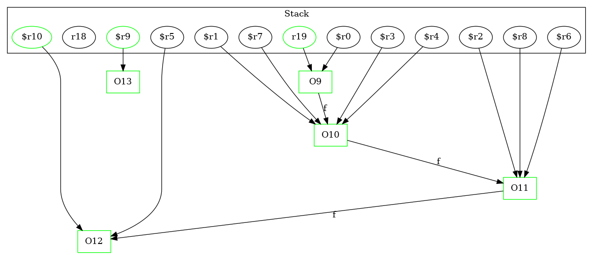

-1 : r18 := @parameter0: java.lang.String[]
9 : $r0 = new Test3Node
9 : specialinvoke $r0.|Test3Node: void |init|()|()
9 : r19 = $r0
10 : $r1 = new Test3Node
10 : specialinvoke $r1.|Test3Node: void |init|()|()
10 : r19.|Test3Node: Test3Node f| = $r1
11 : $r3 = r19.|Test3Node: Test3Node f|
11 : $r2 = new Test3Node
11 : specialinvoke $r2.|Test3Node: void |init|()|()
11 : $r3.|Test3Node: Test3Node f| = $r2
12 : $r4 = r19.|Test3Node: Test3Node f|
12 : $r6 = $r4.|Test3Node: Test3Node f|
12 : $r5 = new Test3Node
12 : specialinvoke $r5.|Test3Node: void |init|()|()
12 : $r6.|Test3Node: Test3Node f| = $r5
13 : $r7 = r19.|Test3Node: Test3Node f|
13 : $r8 = $r7.|Test3Node: Test3Node f|
13 : $r10 = $r8.|Test3Node: Test3Node f|
13 : $r9 = new Test3Node ->class soot.jimple.internal.JAssignStmt {Left: class soot.jimple.internal.JimpleLocal, Right: class soot.jimple.internal.JNewExpr}
13 : specialinvoke $r9.|Test3Node: void |init|()|()
13 : $r10.|Test3Node: Test3Node f| = $r9
14 : $r11 = r19.|Test3Node: Test3Node f|
14 : $r12 = $r11.|Test3Node: Test3Node f|
14 : $r13 = $r12.|Test3Node: Test3Node f|
14 : $r15 = $r13.|Test3Node: Test3Node f|
14 : $r14 = new Test3Node
14 : specialinvoke $r14.|Test3Node: void |init|()|()
14 : $r15.|Test3Node: Test3Node f| = $r14
15 : r16 = staticinvoke |Test3: Test3Node foo(Test3Node)|(r19)
16 : $r17 = new Test3Node
16 : specialinvoke $r17.|Test3Node: void |init|()|()
16 : r20 = $r17
18 : return
